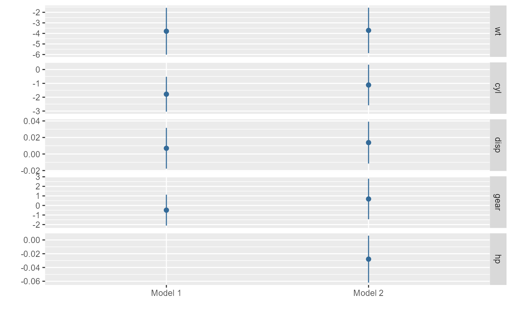

small_multiple is a function for plotting regression results of multiple models as a 'small multiple' plot
small_multiple(
x,
ci = 0.95,
margins = FALSE,
dodge_size = 0.4,
show_intercept = FALSE,
show_stats = FALSE,
stats_tb = NULL,
stats_digits = 3,
stats_compare = FALSE,
stats_size = 10,
stats_padding = unit(c(4, 4), "mm"),
stats_layout = c(2, -1, 1),
model_order = NULL,
submodel_order = NULL,
axis_switch = FALSE,
by_2sd = FALSE,
dot_args = list(size = 0.3),
...
)Arguments
- x
Either a model object to be tidied with
tidy, or a list of such model objects, or a tidy data frame of regression results (see 'Details').- ci
A number indicating the level of confidence intervals; the default is .95.
- margins
A logical value indicating whether presenting the average marginal effects of the estimates. See the Details for more information.
- dodge_size
A number (typically between 0 and 0.3; the default is .06) indicating how much horizontal separation should appear between different submodels' coefficients when multiple submodels are graphed in a single plot. Lower values tend to look better when the number of models is small, while a higher value may be helpful when many submodels appear on the same plot.
- show_intercept
A logical constant indicating whether the coefficient of the intercept term should be plotted.
- show_stats
A logical constant indicating whether to show a table of model fitness statistics under the dot-whisker plot. The default is
TRUE.- stats_tb
Customized table of model fitness. The table should be in a
data.frame.- stats_digits
A numeric value specifying the digits to display in the fitness table. This parameter is relevant only when
show_stats = TRUE. Default is 3, providing a balance between precision and readability.- stats_compare
A logical constant to enable comparison of statistics in the fitness table. Applicable only when
show_stats = TRUE. The default value isFALSE. That is, it presents all the statistics across different modeling methods, yet potentially expanding the table's breadth. When set toTRUE, only the shared, comparable statistics are remained.- stats_size
A numeric value determining the font size in the fitness table, effective only if
show_stats = TRUE. The standard setting is 10.- stats_padding
Defining the internal margins of the fitness table. Relevant when
show_stats = TRUE. Set by default tounit(c(4, 4), "mm"), allowing for a balanced layout. Further customization options refer totableGrob.- stats_layout
Adjusting the spacing between the dotwhisker plot and the fitness table. Effective when
show_stats = TRUE. The initial configuration isc(2, -1, 1), ensuring a coherent visual flow. Additional layout settings refer toplot_layout.- model_order
A character vector defining the order of the models when multiple models are involved.
- submodel_order
A character vector defining the order of the submodels when multiple submodels are involved.
- axis_switch
A logical constant indicating the position of variable labels and y axis ticks. Default is FALSE, when the variable label is on the right side, and y axis ticks is on the left size.
- by_2sd
When x is model object or list of model objects, should the coefficients for predictors that are not binary be rescaled by twice the standard deviation of these variables in the dataset analyzed, per Gelman (2008)? Defaults to
TRUE. Note that when x is a tidy data frame, one can useby_2sdto rescale similarly.- dot_args
A list of arguments specifying the appearance of the dots representing mean estimates. For supported arguments, see
geom_pointrangeh.- ...
Arguments to pass to
dwplot.
Value
The function returns a ggplot object.
Details
small_multiple, following Kastellec and Leoni (2007), provides a compact means of representing numerous regression models in a single plot.
Tidy data frames to be plotted should include the variables term (names of predictors), estimate (corresponding estimates of coefficients or other quantities of interest), std.error (corresponding standard errors), and model (identifying the corresponding model).
In place of std.error one may substitute conf.low (the lower bounds of the confidence intervals of each estimate) and conf.high (the corresponding upper bounds).
Alternately, small_multiple accepts as input a list of model objects that can be tidied by tidy (or parameters (with proper formatting)), or a list of such model objects.
Optionally, more than one set of results can be clustered to facilitate comparison within each model; one example of when this may be desirable is to compare results across samples. In that case, the data frame should also include a variable submodel identifying the submodel of the results.
To minimize the need for lengthy, distracting regression tables (often relegated to an appendix for dot-whisker plot users), dwplot incorporates optimal model fit statistics directly beneath the dot-whisker plots. These statistics are derived using the excellent performance functions and integrated at the plot's base via patchwork and tableGrob functions. For added flexibility, dwplot includes the stats_tb feature, allowing users to input customized statistics. Furthermore, a suite of stats_* functions is available for fine-tuning the presentation of these statistics, enhancing user control over the visual output.
References
Kastellec, Jonathan P. and Leoni, Eduardo L. 2007. "Using Graphs Instead of Tables in Political Science." *Perspectives on Politics*, 5(4):755-771.
Examples
library(broom)
library(dplyr)
# Generate a tidy data frame of regression results from six models
m <- list()
ordered_vars <- c("wt", "cyl", "disp", "hp", "gear", "am")
m[[1]] <- lm(mpg ~ wt, data = mtcars)
m123456_df <- m[[1]] %>% tidy %>% by_2sd(mtcars) %>%
mutate(model = "Model 1")
for (i in 2:6) {
m[[i]] <- update(m[[i-1]], paste(". ~ . +", ordered_vars[i]))
m123456_df <- rbind(m123456_df, m[[i]] %>% tidy %>% by_2sd(mtcars) %>%
mutate(model = paste("Model", i)))
}
# Generate a 'small multiple' plot
small_multiple(m123456_df)

## Using submodels to compare results across different samples
# Generate a tidy data frame of regression results from five models on
# the mtcars data subset by transmission type (am)
ordered_vars <- c("wt", "cyl", "disp", "hp", "gear")
mod <- "mpg ~ wt"
by_trans <- mtcars %>% group_by(am) %>% # group data by transmission
do(tidy(lm(mod, data = .))) %>% # run model on each group
rename(submodel = am) %>% # make submodel variable
mutate(model = "Model 1") %>% # make model variable
ungroup()
for (i in 2:5) {
mod <- paste(mod, "+", ordered_vars[i])
by_trans <- rbind(by_trans, mtcars %>% group_by(am) %>%
do(tidy(lm(mod, data = .))) %>%
rename(submodel = am) %>%
mutate(model = paste("Model", i)) %>%
ungroup())
}
small_multiple(by_trans) +
theme_bw() + ylab("Coefficient Estimate") +
geom_hline(yintercept = 0, colour = "grey60", linetype = 2) +
theme(axis.text.x = element_text(angle = 45, hjust = 1),
legend.position=c(0, 0), legend.justification=c(0, 0),
legend.title = element_text(size=9),
legend.background = element_rect(color="gray90"),
legend.spacing = unit(-3, "pt"),
legend.key.size = unit(10, "pt")) +
scale_colour_hue(name = "Transmission",
breaks = c(0, 1),
labels = c("Automatic", "Manual"))